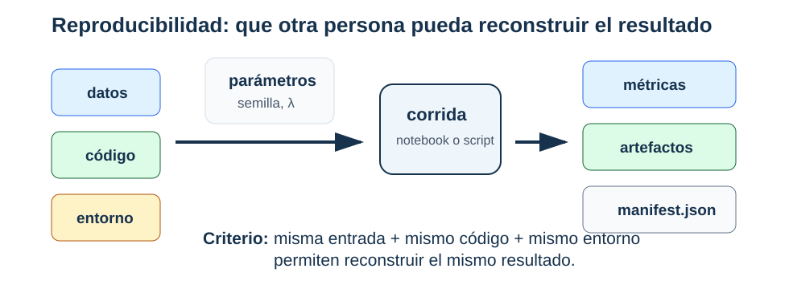

Parte VI · Reproducibilidad y comunicación
Reproducibilidad y registro de experimentos
Datos, código, entorno, parámetros y artefactos
Si otra persona recibe nuestros resultados, ¿puede reconstruir qué datos, código, parámetros y decisiones produjeron la conclusión?
Qué significa reproducir
Reproducibilidad: capacidad de volver a ejecutar el análisis con los mismos datos, código, entorno y parámetros para obtener resultados iguales o numéricamente equivalentes bajo una tolerancia declarada.
Esta propiedad permite comparar corridas y depurar errores. No demuestra que el modelo sea correcto ni que el resultado se replique con otra muestra.

Una corrida reproducible no se identifica solo por el resultado final. Necesita registrar datos, código, entorno, parámetros, métricas y artefactos para reconstruir la corrida.
Responder esa pregunta exige más que conservar un notebook. Los datos, el código, el entorno y los parámetros deben identificar una corrida; las métricas y los artefactos deben poder vincularse con ella. Primero distinguiremos reproducibilidad computacional de replicación estadística. Después construiremos un manifiesto y estudiaremos qué registran una semilla y un hash, y qué no pueden garantizar.
Reproducibilidad computacional y replicación estadística
Conviene separar dos preguntas:
- Reproducibilidad computacional: con los mismos bytes, código y entorno, ¿se reconstruye el mismo resultado?
- Replicación estadística: con otra muestra del proceso de interés, ¿la conclusión se mantiene dentro de una variación razonable?
La primera condiciona en el conjunto observado. La segunda considera \(D_m'\sim P^m\) y estudia la distribución de \(T(D_m')\), donde \(T\) puede ser un coeficiente, una métrica o una recomendación.
Una semilla fija selecciona una realización de generadores pseudoaleatorios. Debe registrarse, pero no reduce \(\operatorname{Var}_{D_m}(T(D_m))\) ni corrige cambio de distribución.
Un manifiesto completo registra la semilla y también el protocolo estadístico: unidad de muestreo, partición, repeticiones, intervalos o dispersión y distribución de uso pretendida.
El paquete mínimo reproducible
| Elemento | Pregunta que responde |
|---|---|
README.md |
¿Qué hace el proyecto y cómo se corre? |
requirements.txt o environment.yml |
¿Qué entorno necesita? |
src/ o funciones claras |
¿Dónde vive la lógica reutilizable? |
notebooks/ |
¿Dónde está la exploración documentada? |
data/README.md |
¿Qué datos se usaron y qué restricciones tienen? |
reports/ |
¿Cuál es la conclusión final? |
artifacts/ |
¿Qué modelos, métricas o figuras se generaron? |
manifest.json |
¿Qué entorno, parámetros, métricas y hashes identifican la corrida? |
Semillas
La semilla controla generadores pseudoaleatorios:
RANDOM_STATE = 42Pero una semilla no garantiza reproducibilidad total si cambian dependencias, hardware, versiones o datos. Algunas operaciones paralelas también pueden ser no deterministas. Por eso se registra junto con el entorno y los artefactos.
Manifiesto de un experimento
Un manifiesto (manifest) es un resumen estructurado:
{
"schema_version": 1,
"run_id": "logreg-c01-s2105",
"code": {"commit": "4d92a1f"},
"environment": {
"python": "3.13.5",
"packages": {"numpy": "2.3.1", "scikit-learn": "1.7.1"}
},
"inputs": {"datos.csv": "6f7d...a12c"},
"params": {
"model": "LogisticRegression",
"C": 1.0,
"seed": 2105,
"split": {"train": 0.6, "dev": 0.2, "test": 0.2}
},
"metrics": {"dev_f1": 0.81},
"artifacts": {"metricas.csv": "c2a8...90bf"}
}Los hashes se muestran abreviados solo para lectura; el archivo real conserva los 64 caracteres hexadecimales de SHA-256. La pregunta que responde el manifiesto es: “¿qué corrida produjo este número?”.
Ejemplo resuelto: un manifiesto mínimo
Un manifiesto suficientemente útil para una regla de referencia podría ser:
{
"schema_version": 1,
"run_id": "baseline-logreg-s2105",
"environment": {
"python": "3.13.5",
"packages": {"scikit-learn": "1.7.1"}
},
"params": {
"model": "LogisticRegression",
"C": 1.0,
"seed": 2105,
"split": "60/20/20 estratificado"
},
"metrics": {"dev_f1": 0.81},
"artifacts": {"metricas.csv": "c2a8...90bf"}
}No es necesario que sea largo. Debe distinguir la partición de cada métrica y permitir localizar sus salidas. test_f1 se agrega cuando el protocolo queda cerrado y se ejecuta la evaluación final.
Ejemplo resuelto: resultado no reproducible
Consideremos un equipo que reporta test_f1 = 0.84, pero al ejecutar el notebook desde cero aparece test_f1 = 0.77. La primera hipótesis no debe ser mala fe; debe ser falta de trazabilidad. La revisión puede seguir este orden:
- si la partición usa la misma semilla;
- si la tubería aprende transformaciones solo en entrenamiento;
- si el conjunto de datos tiene el mismo hash;
- si las versiones de librerías cambiaron;
- si el reporte copió una métrica de una corrida anterior.
Un resultado no reproducible no se corrige con memoria. Se reconstruye la secuencia de entradas y transformaciones hasta localizar por qué cambió la métrica.
Ejemplo resuelto: auditar un manifiesto
Consideremos un manifiesto que registra:
{
"run_id": "ridge_v3",
"environment": {"python": "3.13.5", "packages": {"numpy": "2.3.1"}},
"params": {"model": "Ridge", "alpha": 10.0, "seed": 2105},
"metrics": {"dev_rmse": 12.4},
"artifacts": {"predictions.csv": "abc123..."}
}Dos semanas después, el archivo predictions.csv existe, pero su hash calculado es sha256:def987.
La conclusión correcta no es “el modelo está mal”. La conclusión correcta es:
- el artefacto actual no coincide con el artefacto registrado;
- la métrica
dev_rmse=12.4ya no queda respaldada por ese archivo; - hay que volver a ejecutar la evaluación o recuperar el artefacto original;
- cualquier reporte que use esa corrida debe marcarse como no verificado hasta resolver la discrepancia.
Un hash no evalúa calidad estadística. Evalúa identidad del archivo.
Registro de experimentos
Herramientas como MLflow organizan experimentos en corridas con parámetros, métricas y artefactos. La herramienta puede cambiar; el patrón conceptual es el mismo:
| Concepto | Representación mínima |
|---|---|
| experimento | carpeta o manifiesto |
| corrida | una ejecución con semilla y parámetros |
| parámetros | hiperparámetros, semilla y protocolo de partición |
| métricas | resultados numéricos |
| artefactos | modelo, figuras, reporte, predicciones |
Persistencia de modelos
Con scikit-learn, una práctica común es guardar tuberías completas:
from joblib import dump
dump(pipeline, "artifacts/model.joblib")Nunca cargues archivos pickle o joblib de fuentes no confiables. La persistencia basada en pickle puede ejecutar código durante la carga. Para producción o intercambio abierto, considera formatos más seguros o flujos de confianza explícita.
Hash de artefactos
Un hash SHA-256 permite detectar si un archivo cambió:
import hashlib
def sha256_file(path):
h = hashlib.sha256()
with open(path, "rb") as f:
for chunk in iter(lambda: f.read(8192), b""):
h.update(chunk)
return h.hexdigest()Una auditoría mínima de reproducibilidad
- ¿Está la semilla definida en un lugar visible?
- ¿La partición de datos es reproducible?
- ¿El preprocesamiento está dentro de una tubería?
- ¿El entorno está documentado?
- ¿Las métricas finales se pueden recalcular?
- ¿Los artefactos tienen nombre, versión o hash?
- ¿El reporte distingue resultados, interpretación y recomendación?
Qué debe poder reconstruir otra persona
Al abrir el análisis tiempo después, otra persona debería poder responder:
- ¿qué datos se usaron?;
- ¿con qué entorno se ejecutó?;
- ¿qué modelo produjo la métrica reportada?;
- ¿qué archivos sostienen los resultados y cuáles son auxiliares?;
- ¿qué decisión se tomó a partir de la corrida?
Manifiesto del clasificador sintético
Para clasificacion_binaria_sintetica.csv, un manifiesto mínimo debería registrar:
| Campo | Ejemplo |
|---|---|
| conjunto de datos | clasificacion_binaria_sintetica.csv |
| hash o versión | SHA-256 del archivo publicado |
| target | target |
| segmentos auditados | base, reciente |
| partición | semilla y proporciones |
| tubería | escalamiento dentro de la tubería y modelo |
| métrica primaria | F1 o recall |
| artefactos | tabla de métricas, matriz de confusión, error por segmento |
El manifiesto no garantiza que el modelo sea bueno. Permite reconstruir qué corrida produjo los archivos registrados. Esa diferencia es central para una defensa técnica.
Comprobaciones de trazabilidad
- Un notebook ejecutable sin semilla puede ser reproducible en estructura, pero no necesariamente en resultados numéricos.
- Si el conjunto cambia y no cambia el manifiesto, ya no se sabe qué archivo sostiene la conclusión.
- Una tabla de métricas sin partición asociada no permite reconstruir la evaluación.
Ejemplo resuelto: manifiesto mínimo en JSON
Un manifiesto pequeño puede verse así:
{
"schema_version": 1,
"environment": {
"python": "3.13.5",
"packages": {"pandas": "2.3.1", "scikit-learn": "1.7.1"}
},
"params": {
"dataset": "clasificacion_binaria_sintetica.csv",
"target": "target",
"seed": 2105,
"split": "60/20/20 estratificado",
"metric_primary": "f1"
},
"metrics": {"dev_f1": 0.81},
"artifacts": {
"metrics.csv": "c2a8...90bf",
"slice_report.csv": "151f...2d8e"
}
}Este archivo no sustituye el reporte, pero permite auditar qué corrida produjo qué resultado. Si cambian datos, métrica o partición, el manifiesto debe cambiar.
Qué debe poder volver a ejecutarse
Un paquete reproducible no exige que todo el análisis se ejecute en segundos, pero sí que exista una ruta verificable. Como mínimo, otra persona debe poder ejecutar un script o notebook que cargue datos permitidos, reconstruya particiones, entrene o cargue el modelo declarado, calcule métricas principales y regenere la tabla final. Si el entrenamiento completo es costoso, se debe incluir una versión reducida o un modo de evaluación que cargue artefactos ya generados y verifique sus métricas.
La trazabilidad se rompe cuando una figura se pega manualmente, una métrica se copia sin archivo de origen o una tabla final no se puede regenerar. En ese caso, la discusión técnica puede ser buena, pero el resultado no es auditable. El manifiesto debe apuntar a los archivos que sostienen cada afirmación importante.
Síntesis
Reproducibilidad significa que otra persona puede reconstruir el resultado desde datos, código, entorno, parámetros y artefactos. Una semilla ayuda, pero no basta si cambian datos, librerías, hardware o pasos manuales.
El manifiesto registra qué corrida produjo qué métricas y qué artefactos. Los hashes detectan cambios en archivos, pero no prueban que el contenido sea correcto. El registro de experimentos ordena comparaciones y evita depender de memoria o nombres informales.
Un paquete reproducible debe permitir auditar el resultado final. Eso implica separar archivos de entrada, scripts, outputs, métricas, modelos y reporte, y declarar qué archivo sostiene cada afirmación cuantitativa.
Problemas
¿Por qué una semilla fija no garantiza reproducibilidad completa?
¿Qué diferencia hay entre código que corre y un resultado reproducible?
Diseñe una tabla mínima con tres corridas, dos hiperparámetros y dos métricas.
Explique qué detecta y qué no detecta un hash SHA-256.
Cree un
manifest.jsonmínimo para un experimento.Calcule el hash SHA-256 de un archivo de resultados.
¿Qué riesgos tiene cargar modelos
pickleojoblibde fuentes no confiables?Si no puede reproducir una métrica final, ¿qué partes del análisis revisaría primero?
Identifique qué cantidades numéricas deben mantenerse fijas para comparar dos corridas de entrenamiento.
Prepare un paquete mínimo reproducible: manifiesto, entorno, script de evaluación, tabla de métricas y lista de artefactos.